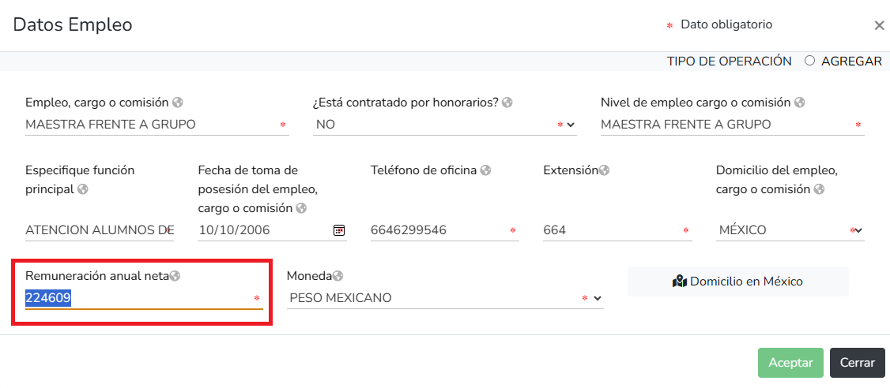

Acceder a Declaranet
Primero debemos acceder a la pagina de DeclaraNet correspondiente, si eres del estado de Baja California puedes acceder a DeclaraNet a través del siguiente link.
Después debes dar click en el botón "Presentar Declaración".

Después debes ingresar tu CURP.

Finalmente ingresa tu contraseña.

Declaracion de Inicio
Damos click en presentar declaracion.
En la Fecha de incio del encargo pondra la fecha del primer dia en el que comenzo a ejercer su profesion y en el Nivel de encargo mas alto pondremos "Operativo (a) y Homologo (a)".

Declaracion de Modificacion
Damos click en presentar declaracion.
En el año pondremos el año actual en el que hacemos la declaracion y en Nivel de encargo mas alto pondremos "Operativo (a) y Homologo (a)".

En este apartado nos pediran nuestros datos personales, debemos completar todos los datos y despues presionar el boton verde que dice "Aceptar" y posteriormente el boton verde que dice "Guardar".

Pasaremos el raton por el lado izquierdo hasta llegar a la barra lateral de color negro, al pasar el raton por encima se abrira y nos mostrara en verde la seccion que completamos, despues daremos click en "Domicilio declarante".

Se nos mostrara la siguiente ventana en donde debemos elegir nuestro domicilio, ya sea en Mexico o en el extranjero.
En este apartado nos pediran los datos de nuestro docimilio, debemos completar todos los datos y despues presionar el boton verde que dice "Aceptar" y posteriormente el boton verde que dice "Guardar".

Pasaremos el raton por el lado izquierdo hasta llegar a la barra lateral de color negro, al pasar el raton por encima se abrira y nos mostrara en verde la seccion que completamos, despues daremos click en "Datos curriculares del declarante".

Se nos mostrara la siguiente pantalla en donde debemos seleccionar el boton negro.

En este apartado nos muestra nuestros datos curriculares, osea los datos de la institucion en que estudiamos nuestra carrera u otros titulos academicos. Amenos que exista una modificacion en este apartado daremos click en "SIN CAMBIO" y por ultimo click al boton "Aceptar".
Damos click al boton "Guardar" para completar este apartado.

Pasaremos el raton por el lado izquierdo hasta llegar a la barra lateral de color negro, al pasar el raton por encima se abrira y nos mostrara en verde la seccion que completamos, despues daremos click en "Datos del empleo".

En este apartado nos pediran los datos de nuestro empleo, para ingresar nuestros datos damos click en el boton negro.
Unicamente modificaremos la "Remuneración anual neta" de nuestra plaza, en caso de tener mas de una plaza se debe poner la Remuneración anual neta de cada una de las plazas.
Nota: Puedes calcular tu remuneracion anual neta desde nuestra pagina, haciendo click en el apartado Como calcular mi Remuneracion anual?.
Declaracion de Conclusion
Damos click en presentar declaracion.
En la Fecha de conclusion del encargo pondra la fecha del ultimo dia en el que ejercio su profesion y en el Nivel de encargo mas alto pondremos "Operativo (a) y Homologo (a)".

Como calcular mi Remuneracion anual?
Tutorial remuneracion.